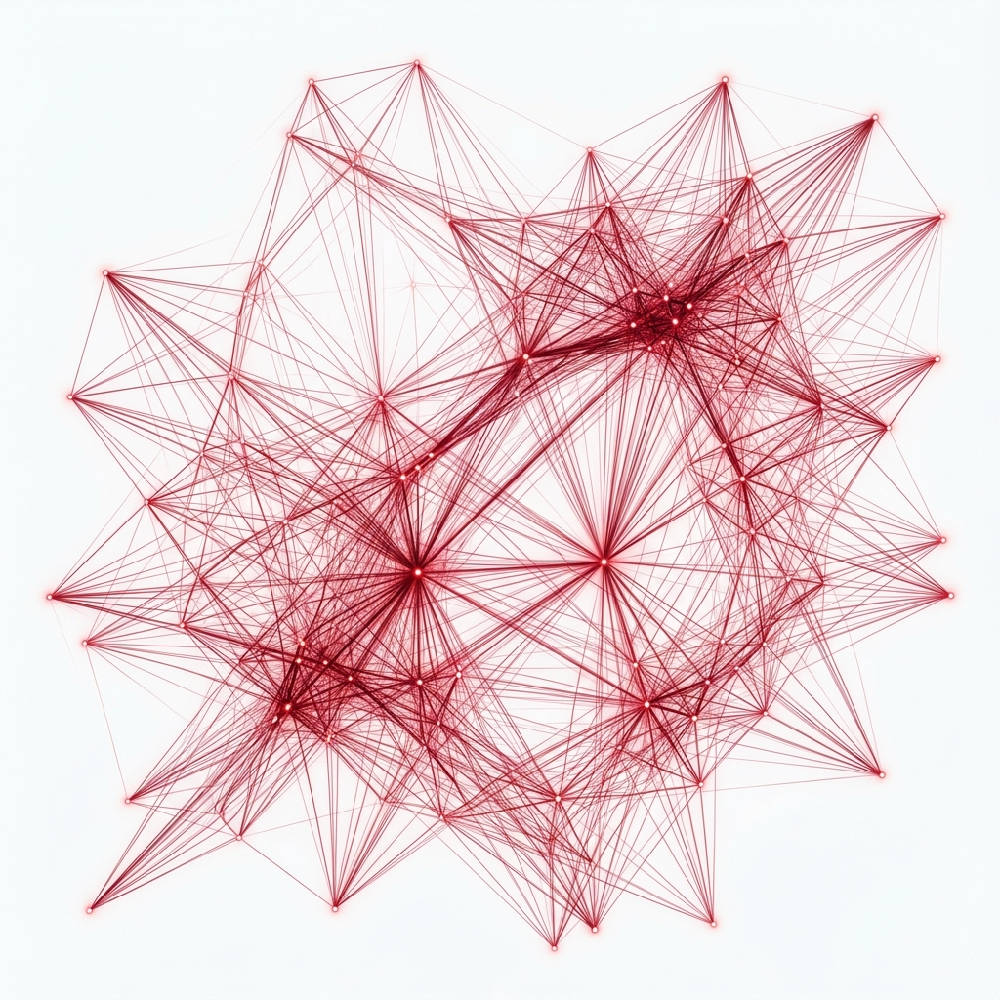
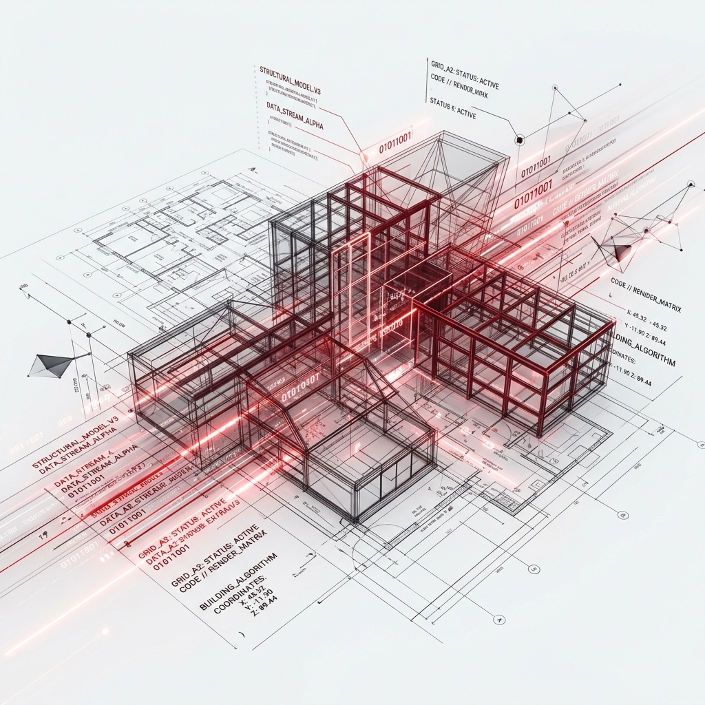
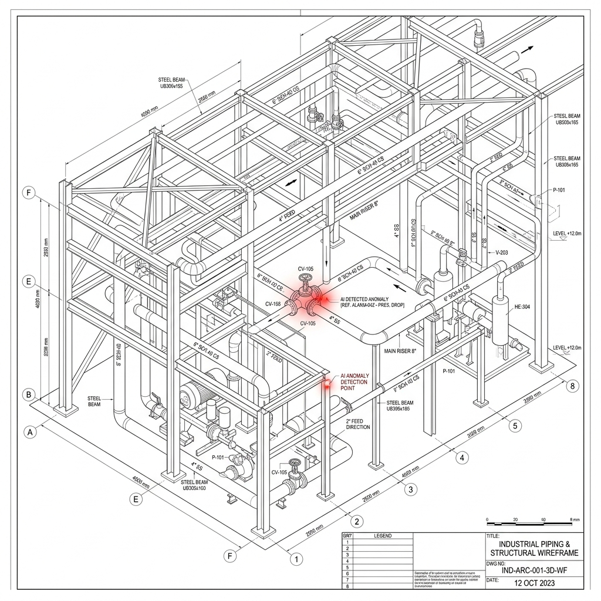

1С:Документооборот отлично передает PDF от подрядчика к техзаказчику. СЭД не анализирует смысл. Система не защитит от подписания убыточной сметы, она лишь ускорит сбор ЭЦП под ней.
Сметные программы проверяют соответствие ГЭСН/ФЕР (правильность умножения). Но они не знают рынка. Они подтвердят формулу, но не скажут, что соседний объект закупал этот бетон на 15% дешевле.
Современная смета — это 500+ страниц. Инженер ПТО физически не способен удержать в голове смежные разделы. Двойной учёт объёмов легализуется подписью в актах КС-2 из-за банальной усталости.
На объекте в 1,5 млрд руб. слепая зона обойдется девелоперу до 150 000 000 руб. упущенной прибыли.
Снижение влияния человеческого фактора и предотвращение финансовых и юридических рисков на всех этапах стройки.
Полный контроль над проектом. Сметы, акты и расценки становятся прозрачными и оцифрованными для руководства.
Увеличение маржи компании за счет выявления скрытых и необоснованных наценок подрядчиков.
Блокировка раздутых бюджетов еще на стадии тендера, что превентивно защищает от колоссальных потенциальных убытков.
Интеллектуальный и быстрый анализ инвестиционной привлекательности и рентабельности новых объектов в вашем портфеле.
Снятие рутинной операционки с отдела специалистов (ПТО, сметчиков), кратное повышение их скорости работы.
Быстрая окупаемость инвестиций (ROI)
Стоимость лицензии и внедрения системы часто полностью окупается уже на этапе тендерного аудита одного крупного объекта за счет предотвращения переплат.
Федеральная ИТ-компания. Разработка высоконагруженных
систем и ИИ-агентов. Экспертиза в машинном обучении и защите данных.
7rlines.ru
Полный цикл проектно-изыскательских работ, ТЭО,
BIM-модели. Глубокая экспертиза документа и расчёта.
ing-in.ru
На рынке с 2004 г., 150+ реализованных объектов.
Экспертиза площадки, реальных объёмов и денег на стройке.
acons.group
Большое Савино (Пермь) · Геленджик · Кольцово
Бадаевский (Москва) · Clever Park · Малевич · Мечта
Логопарк «Высота» · МФК Botanica · БЦ Clever Park

СтройИнтеллект — это микросервисная архитектура из 9 узкоспециализированных ИИ-агентов, работающих параллельно в изолированном контуре Заказчика.
Агент ГИП анализирует соответствие заявленных в смете видов работ реальной проектной документации и технологическим картам. Он выявляет логические аномалии, которые пропускает обычный софт.
Кейс: Подрядчик заложил коэффициент 1.15 на "работу в охранной зоне ЛЭП".
Действие Агента: ИИ сопоставил стройгенплан (СГП) и геоподоснову. Выявил, что ЛЭП демонтирована на этапе подготовки территории.
Поиск оптимальной цены на ТМЦ и расценок подрядчиков по региональным и внешним базам данных. Глубокий контроль проектных спецификаций и защита от логистических накруток.

3 разных подрядчика присылают 3 сметы в разных форматах. Один спрятал доставку в стоимость бетона, другой вывел отдельно.
Агент автоматически парсит все КП, пересобирает их структуру и выводит единую сопоставимую таблицу. Вы мгновенно видите медиану, дисперсию и "целевой диапазон" для жестких переговоров по каждой строке.
Учёт исторической репутации:
Формирование динамической финансовой модели объекта. Управление маржинальностью, кассовыми разрывами и графиком проектного финансирования.
Агент ПТО скрупулёзно сличает подписанные объёмы в актах выполненных работ (КС-2) с изначальной утверждённой сметой.
Факт: Подрядчик подаёт КС-2 в конце месяца на 45 млн руб. Прораб подписывает не глядя на стройке.
Перехват: Агент сверяет накопительную ведомость и блокирует акт: "Позиция 4.1.2 перевыполнена на 14% относительно базовой сметы". Акт возвращается на доработку без оплаты.
Анализ договорных рисков и коммерческих условий.
Сквозной контроль календарно-сетевого графика и аналитика дашборда объекта.
Легитимная инфляция и дефицит на рынке. Обоснованное удорожание.
Специфика грунтов, требующая нестандартных инженерных подходов.
Расхождение спецификации с проектом (умысел или халатность подрядчика).
Прямая маржинальная накрутка стоимости относительно медианы базы.
Дублирование объёмов в разных разделах. Самый сложный паттерн для человека.
Старые редакции ГЭСН/ФЕР, неверные индексы Минстроя или расчёт по НДС 20% вместо 22%.
Стеснённость, зимнее удорожание, вахта: применены без основания или на весь срок вместо периода.
Давальческое оборудование и материалы заказчика, ошибочно включённые в цену подрядчика.
Работы есть в чертежах и ВОР, но пропущены в смете. Риск удорожания и убытка в ходе стройки.
Абсолютная изоляция вашей коммерческой тайны на базе двухконтурной системы обработки данных.
Мы обеспечиваем процесс развёртывания решения, который не парализует работу вашей компании. Связь с различными учётными системами заказчика настраивается прозрачно, без перестроения текущих бизнес-процессов.
Вы получаете работающий инструмент и найденные деньги уже через 4,5 месяца.
Нам потребуется только 1 системный администратор (на этапе 1) и 1 методолог ПТО (на этапе 3 для калибровки алгоритмов). Никакого отрыва от производства всего отдела.
Вы можете попробовать наш продукт на тестовом объекте. Его возможности нужно прочувствовать на реальных данных.
В разделе "Фасады" подрядчик закладывает установку и разборку строительных лесов (4000 м2). Спустя 250 страниц в разделе "Окна" снова появляется позиция "Аренда и монтаж лесов" с чуть изменённым названием.
СтройИнтеллект выстраивает топологические связи: Фасад и Окна выполняются на одних и тех же высотных отметках в один период времени. Агент блокирует вторую позицию как фиктивную.

На этапе тендера выигрывает подрядчик, заложивший премиальную немецкую трубу REHAU. При подаче акта КС-2 он закрывает объёмы трубой РОСТЕРМ, но по цене REHAU.
Внесение коэффициента К=1.15 на "стесненные условия труда" (работа вблизи действующего предприятия) законно увеличивает стоимость ВСЕХ работ.
ИИ выявляет, что соседний цех снесен на 2-м месяце стройки. Применение коэффициента на 3-й месяц незаконно.
Срезано завышений на: 42 000 000 руб
| Статья расходов / Объем работ | Стоимость |
|---|---|
| Развёртывание Системы и локальных моделей в контуре Заказчика | Включено |
| Создание опорной базы и обучение на исторических данных | Включено |
| Настройка 9 ИИ-агентов и аналитического расчётного модуля | Включено |
| Гарантийное сопровождение (12 месяцев) | Включено |
| Базовая стоимость работ (Этапы 1–4) | 18 442 623 ₽ |
| НДС 22% | 4 057 377 ₽ |
| ИТОГО (Единый платёж) | 22 500 000 ₽ |
Никаких скрытых платежей
Лицензионные и абонентские платежи — 0 ₽. Честная Enterprise-лицензия с бессрочным правом использования.
Федеральная ИТ-компания с профильной строительной экспертизой.